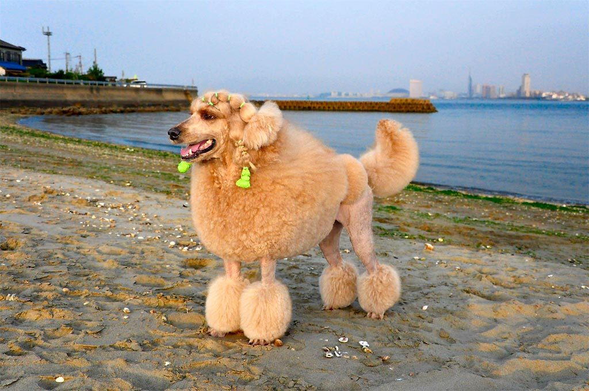
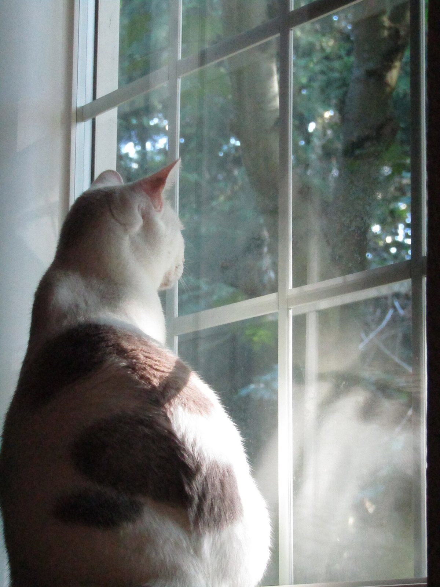
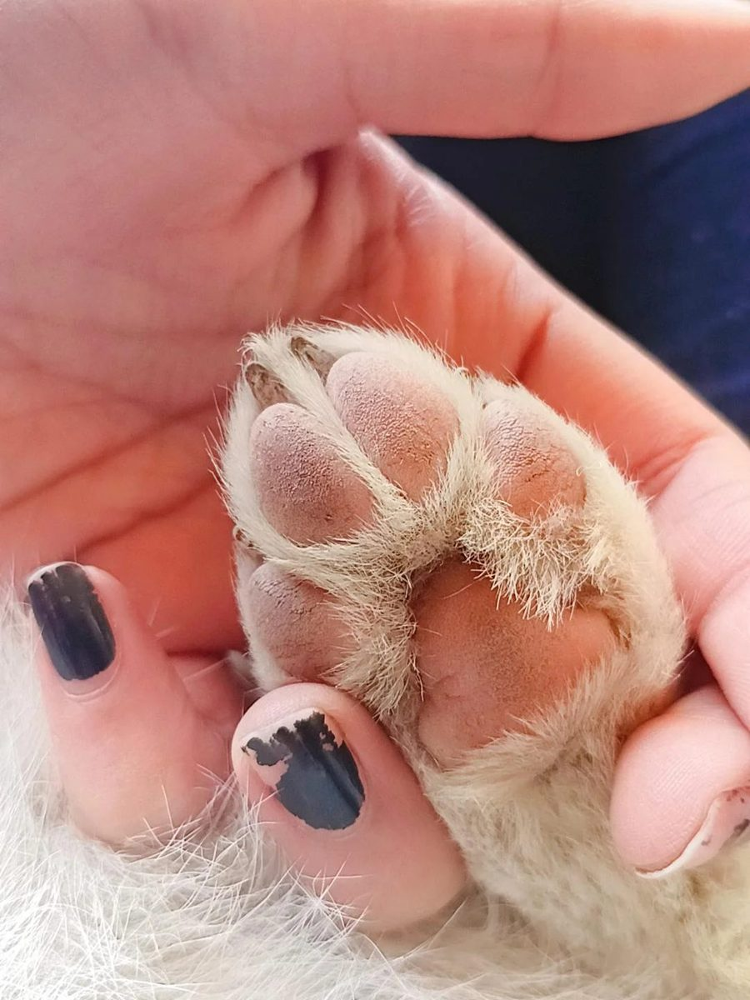
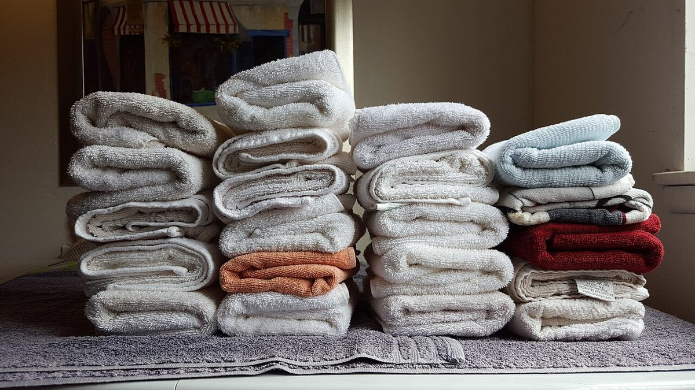

大切な家族を、ゆっくり預けられる場所
※このコピーは制作側の案です。


宮城県多賀城市中央にある、トリミングサロン pet salon NANO。ご相談は、お電話またはInstagramから気軽にどうぞ。
ご利用のながれ
※一般的な流れの目安です。実際の内容は準備中(お問い合わせください)。
- 1
お電話・Instagramでご相談
ご希望やワンちゃん・猫ちゃんの様子を、まずはお気軽にお伝えください。
- 2
ご予約内容の確認
日時や内容について、お店と相談しながら決めていきます。詳細は準備中(お問い合わせください)。
- 3
ご来店
ご予約の日時にご来店ください。場所は「アクセス」ページでご確認いただけます。
- 4
お迎え
仕上がりの確認など、当日の流れは準備中(お問い合わせください)。

